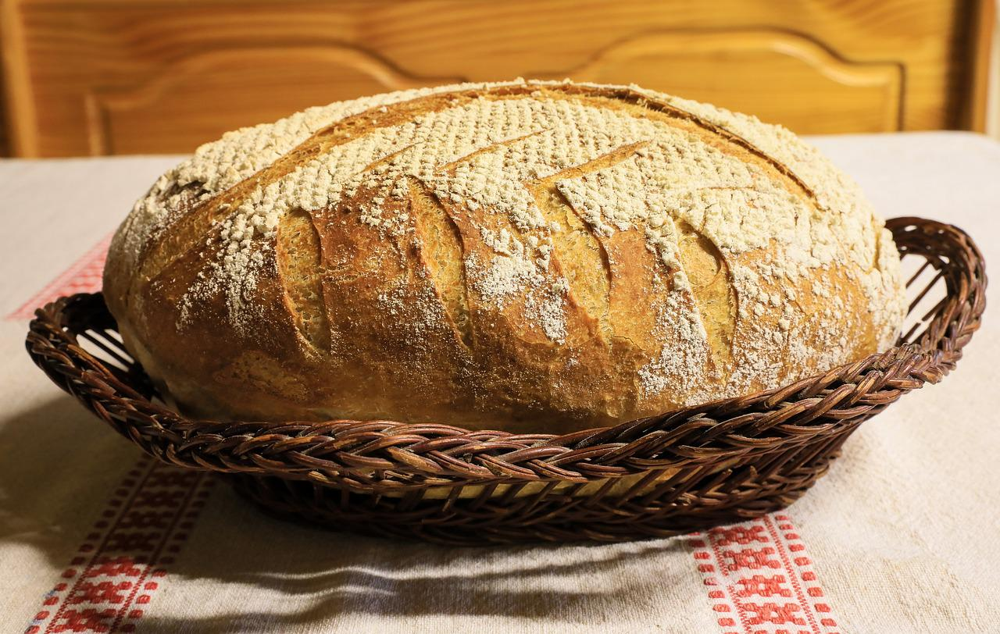

Bread

Description
Not only is this bread a delight to eat, it is a delight to make. You will return to this
recipe time and time again as your go-to bread recipe for all occasions.
Ingredients
- 3 1/2 cups warm water
- 3 T yeast
- 9 T sugar
- 9 cups white flour
- *If desired, up to half the flour can be substituted
with wheat or bread flour
- 3 t salt
- 3 T shortening
Steps
- Combine first 3 ingredients in bowl of stand mixer and let rise.
- Turn dough hook or bowl on low and add shortening. Blend shortening.
- Begin adding flour one cup at a time. When about half of flour is added, add all salt.
- Turn mixer up to medium. Add additional flour just until dough clears side of bowl. Dough should be
spongy but not dry. You may not use all 9 cups.
- Once dough has reached desired consistency, turn mixer on med-high and beat with dough hook or dough beater
for 7 minutes.
- Place in well greased bowl at least twice as large as dough ball. Cover with light covering. Let
rise for about 30 minutes in warm dry place.
- Shape into rolls or bread and place into greased pans. Let rise again for about 30 minutes.
- Prehead oven to 350 and bake for about 30 minutes until top(s) are golden brown. Brush tops with melted
butter and cool on racks.